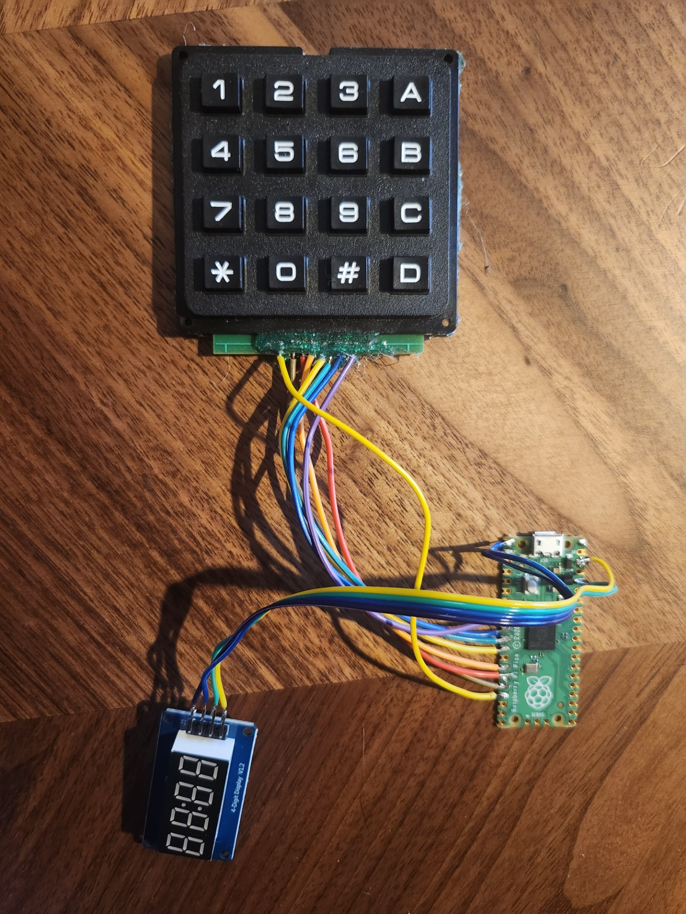
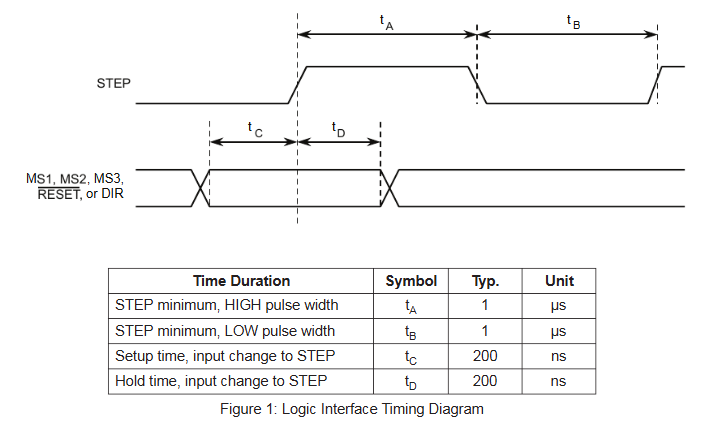
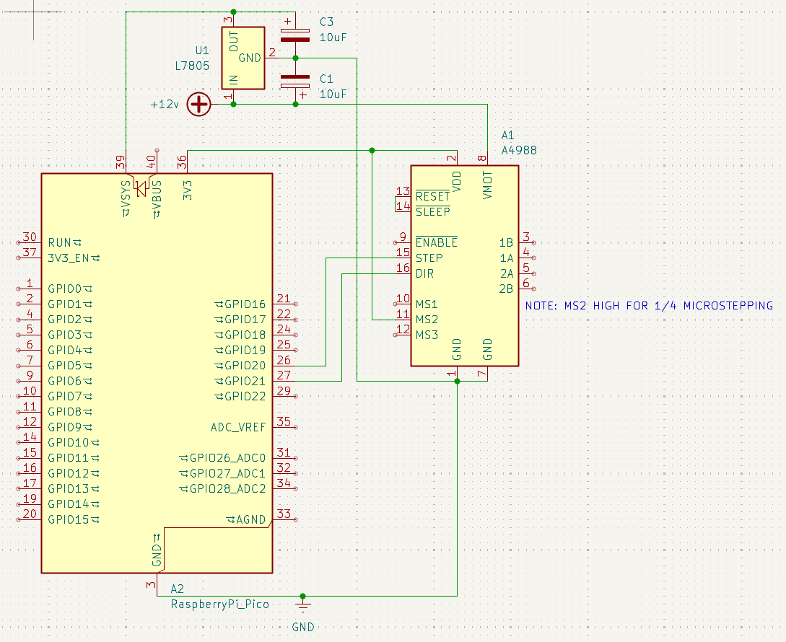
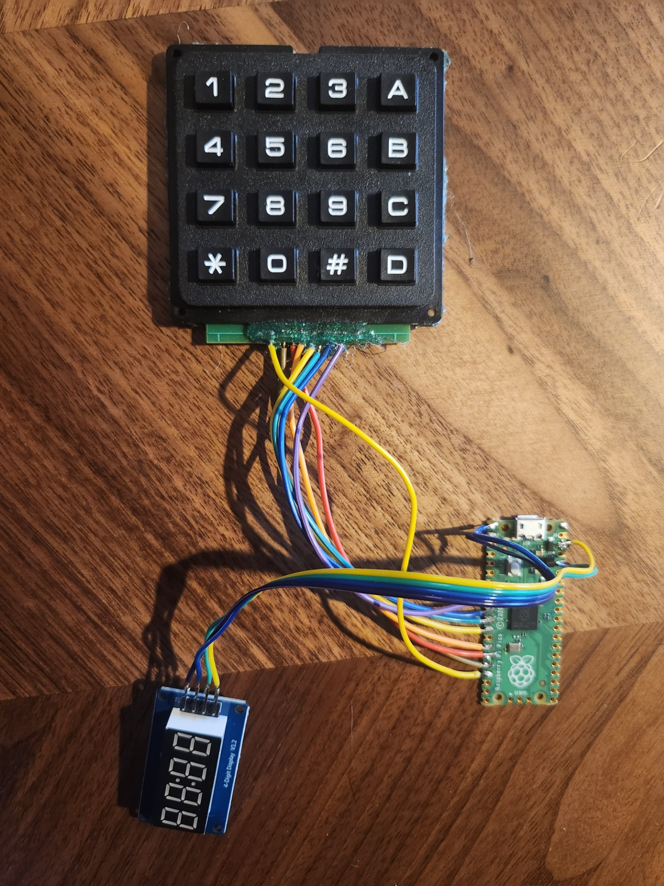
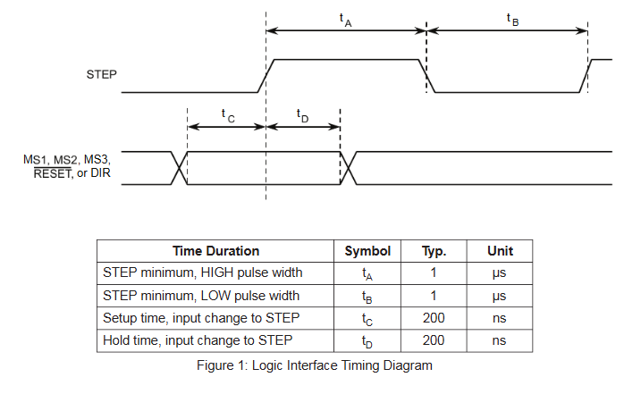
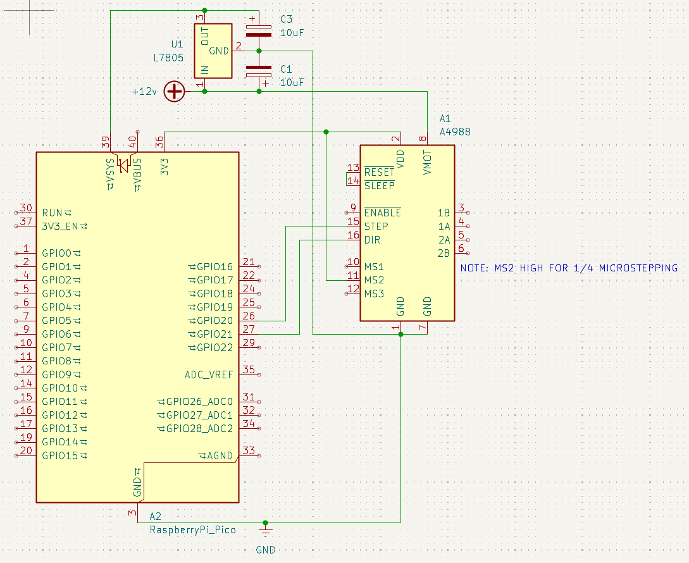

Dividing Electrically
Status: Complete
6/29/2025
In March of last year, I was walking through Columbus Flea Market, and I stumbled upon a vendor selling optical components from a liquidated lab. Every time I did a lap around the place, I would gravitate towards that table, and the seller eventually caught on and offered me a lowered price. I ended up with a precision rotary stage and a precision XY stage. Judging by the age and type of the stepper motors, I assume they are from the 80s.
 These stages have now been sitting in a drawer for about a year, waiting for a project, and now that I have been getting into clockmaking, I would like to use the rotary stage to index for gearcutting. The rotary stage is quite beefy- it has two large ball bearings of ~5cm diameter, plenty for the relatively light loads it will see.
The rotary stage also has a gear train, though I havent counted the teeth to see if it is truly a reduction or just to move the axis of rotation. The gears look very similar.
Anyways, enough about the rotary stage. Lets go into some electronics.
For design goals, I wanted the interface to be intuitive and easy to use (even with greasy hands, etc.), compact, and easy to take apart for storage.
I began with a raspberry pi pico for ease of programming and simplicity. After digging through my many many bins of electronics parts, I conjured up a keypad and a 4-digit i2c 7-segment display (i think i was going to use it for an obdII reader, besides the point). I also stole an a4988 from a ramps 1.4 board I had laying around. This is the arrangement that I came up with, nigh for the a4988 (it will be on a separate board):

As for the software, it was written exclusively in micropython. I used some libraries: TM1637 library and also the DIYables Pico Keypad library, though this one I could have easily implemented myself and saved some space. Implementing typing was easy as: 1) make sure key pressed is a number 2) get key pressed and store into variable 3) if its the second time a key is pressed, multiply the number variable by 10 and add most recent key press 4) wait for # symbol, and if pressed, clear number variable. Knowing that the stepper motor is 1.8 degrees, 360/1.8 = 200 steps per revolution. With microstepping, in this case, 1/4, 200 steps per / 1/4 gives us 800 steps per rotation. Lastly, with the reduction, in this case 8:1: 800 steps per * 8 = 6400 steps per rotation of the rotary axis. Next, all I did was take this value (calculated based on variables at the top), and divide it by the number of teeth variable which we attained previously. This gives us steps per tooth. Next, the script waits for the * key to be pressed, and then calls a function to index to the next tooth, passing the number of steps per tooth with it.
To control the a4988, I decided to go the easy route and bitbang the step pins for the a4988 as to not deal with the programmable I/O on the pico. Here is the datasheet from Allegro:

As you can see, the minimum step high and step low time is 1 microsecond, but of course, we are not going to be stepping this fast. Because of this, I somewhat arbitrarily picked a high time of 10 microseconds, a pulse that the pico can easily handle but also one that isnt too fast for the a4988, and then calculated the off time based on desired rpm of the motor like this: (1 / ((rpm * steps/rev) / 60)) - 10uS. The reasoning for the -10uS is to compensate for the time high. This way, we can adjust the speed to not skip steps. This was implemented quite plainly in a "for i in range(stepspertooth)" loop, where I set the pin high and then used utime.sleep_us() to control delay, and then did the same for low. This does technically halt the program for the time that it is rotating, but this does not matter as nothing else is running during this time, and in fact it will prevent accidental keypresses :) love happy accidents.
Next, I got to work on the a4988's wiring. Since I want this device to be powered by any (center positive) power supply ranging from 12v for convenience, I went to ol' reliable, the l7805 linear regulator. Maybe not the most efficient, but the pico will only be drawing a few hundred mA at most, so it shouldnt be an issue. Both the input and output to the l7805 have large 10uF capacitors for smoothing the voltage into the motors and into the pico, making this entire thing a supremely standard arrangement. Here is the schematic:

Should I have used a custom board? Probably, but stuff like this is so simple that its not really worth it to wait days to weeks for a board, so I busted out the perfboard and got to work soldering (note: veroboard/stripboard might have been a better choice for this, pins branch of horizontally and connections are easier). This is what I came up with:
These stages have now been sitting in a drawer for about a year, waiting for a project, and now that I have been getting into clockmaking, I would like to use the rotary stage to index for gearcutting. The rotary stage is quite beefy- it has two large ball bearings of ~5cm diameter, plenty for the relatively light loads it will see.
The rotary stage also has a gear train, though I havent counted the teeth to see if it is truly a reduction or just to move the axis of rotation. The gears look very similar.
Anyways, enough about the rotary stage. Lets go into some electronics.
For design goals, I wanted the interface to be intuitive and easy to use (even with greasy hands, etc.), compact, and easy to take apart for storage.
I began with a raspberry pi pico for ease of programming and simplicity. After digging through my many many bins of electronics parts, I conjured up a keypad and a 4-digit i2c 7-segment display (i think i was going to use it for an obdII reader, besides the point). I also stole an a4988 from a ramps 1.4 board I had laying around. This is the arrangement that I came up with, nigh for the a4988 (it will be on a separate board):

As for the software, it was written exclusively in micropython. I used some libraries: TM1637 library and also the DIYables Pico Keypad library, though this one I could have easily implemented myself and saved some space. Implementing typing was easy as: 1) make sure key pressed is a number 2) get key pressed and store into variable 3) if its the second time a key is pressed, multiply the number variable by 10 and add most recent key press 4) wait for # symbol, and if pressed, clear number variable. Knowing that the stepper motor is 1.8 degrees, 360/1.8 = 200 steps per revolution. With microstepping, in this case, 1/4, 200 steps per / 1/4 gives us 800 steps per rotation. Lastly, with the reduction, in this case 8:1: 800 steps per * 8 = 6400 steps per rotation of the rotary axis. Next, all I did was take this value (calculated based on variables at the top), and divide it by the number of teeth variable which we attained previously. This gives us steps per tooth. Next, the script waits for the * key to be pressed, and then calls a function to index to the next tooth, passing the number of steps per tooth with it.
To control the a4988, I decided to go the easy route and bitbang the step pins for the a4988 as to not deal with the programmable I/O on the pico. Here is the datasheet from Allegro:

As you can see, the minimum step high and step low time is 1 microsecond, but of course, we are not going to be stepping this fast. Because of this, I somewhat arbitrarily picked a high time of 10 microseconds, a pulse that the pico can easily handle but also one that isnt too fast for the a4988, and then calculated the off time based on desired rpm of the motor like this: (1 / ((rpm * steps/rev) / 60)) - 10uS. The reasoning for the -10uS is to compensate for the time high. This way, we can adjust the speed to not skip steps. This was implemented quite plainly in a "for i in range(stepspertooth)" loop, where I set the pin high and then used utime.sleep_us() to control delay, and then did the same for low. This does technically halt the program for the time that it is rotating, but this does not matter as nothing else is running during this time, and in fact it will prevent accidental keypresses :) love happy accidents.
Next, I got to work on the a4988's wiring. Since I want this device to be powered by any (center positive) power supply ranging from 12v for convenience, I went to ol' reliable, the l7805 linear regulator. Maybe not the most efficient, but the pico will only be drawing a few hundred mA at most, so it shouldnt be an issue. Both the input and output to the l7805 have large 10uF capacitors for smoothing the voltage into the motors and into the pico, making this entire thing a supremely standard arrangement. Here is the schematic:

Should I have used a custom board? Probably, but stuff like this is so simple that its not really worth it to wait days to weeks for a board, so I busted out the perfboard and got to work soldering (note: veroboard/stripboard might have been a better choice for this, pins branch of horizontally and connections are easier). This is what I came up with: